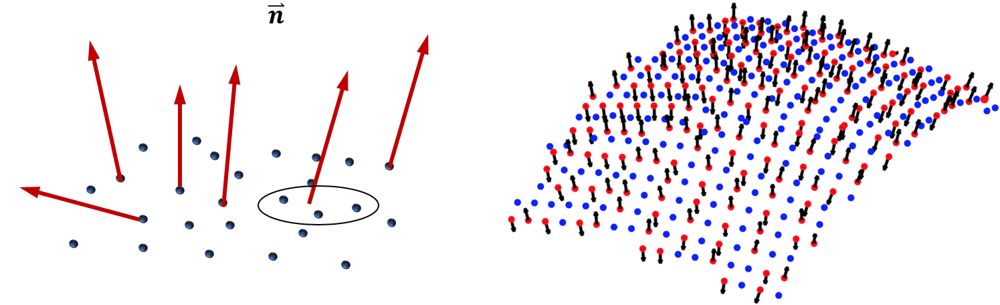
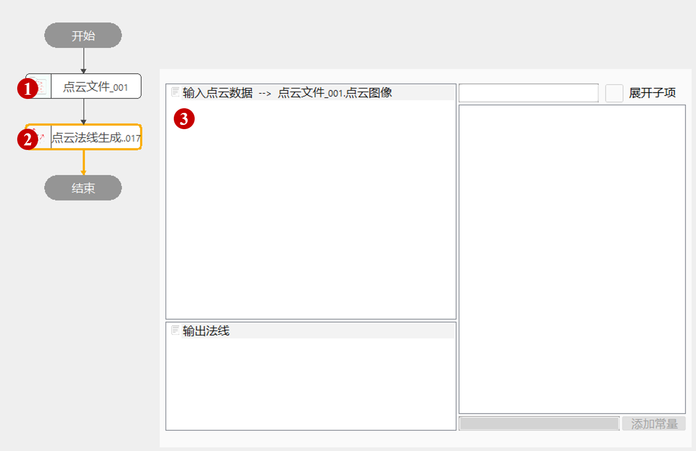
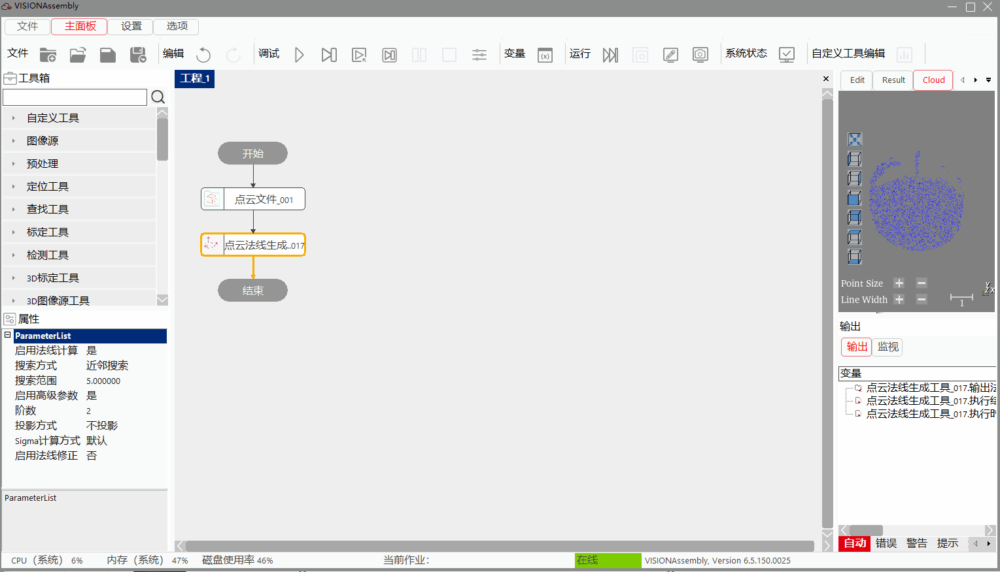
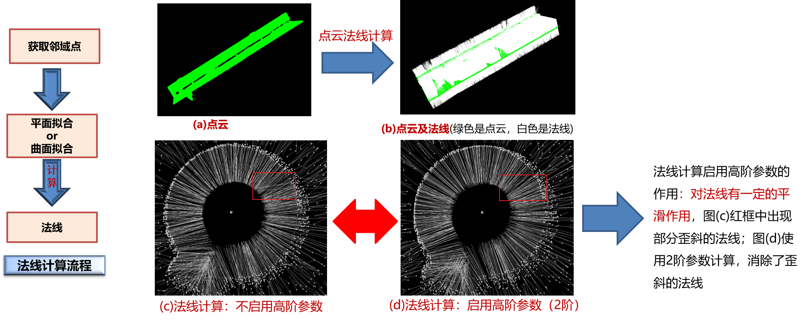
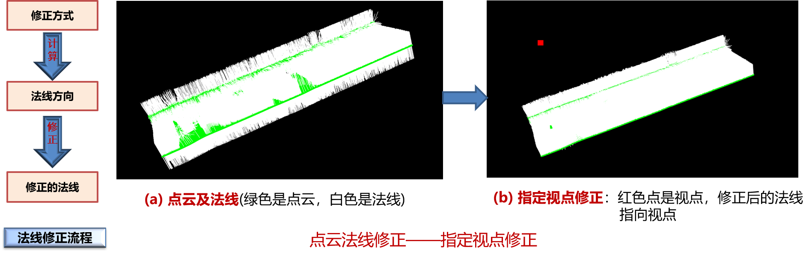

Đối với một mặt cong đều R(u, v) trong không gian 3D, vector pháp tuyến của mặt phẳng tiếp xúc tại điểm (u, v) chính là pháp tuyến của mặt cong tại điểm đó. Đám mây điểm là tập hợp các điểm lấy mẫu từ mặt cong, do đó pháp tuyến của mặt cong tại các điểm mẫu chính là pháp tuyến của đám mây điểm. Công cụ sẽ biểu diễn pháp tuyến dưới dạng đoạn thẳng có hướng.
Pháp tuyến đám mây điểm là thông tin rất thường dùng trong đo lường và kiểm tra 3D. Công cụ này cung cấp 2 chức năng chính: • Tính toán pháp tuyến: từ đám mây điểm đầu vào và các tham số → xuất ra pháp tuyến tương ứng. • Hiệu chỉnh pháp tuyến: từ đám mây điểm + pháp tuyến hiện có → xuất pháp tuyến đã được điều chỉnh hướng. Công cụ thường được dùng trong các thuật toán lọc điểm, phân đoạn điểm, căn chỉnh điểm… nhằm nâng cao độ chính xác.

Công cụ tạo pháp tuyến đám mây điểm thường được dùng trong các thuật toán lọc điểm, phân đoạn điểm, căn chỉnh điểm… để hỗ trợ tăng độ chính xác cho các thuật toán khác.
Bước 1: Thêm công cụ Tải file đám mây điểm → Công cụ Tạo Pháp Tuyến Đám Mây Điểm, nhấp đúp mở chuỗi tham số, nối file đám mây điểm như Hình 3-1;
Bước 2: Chuột phải vào công cụ → “Thuộc tính” để mở giao diện nâng cao, như Hình 3-2.


| Tên tham số | Mô tả tham số |
|---|---|
| Đám mây điểm đầu vào | Ảnh đám mây điểm đầu vào |
| Tên tham số | Mô tả tham số |
|---|---|
| Bật tính toán pháp tuyến | Có: bật chức năng tính pháp tuyến; Không: tắt chức năng tính pháp tuyến |
| Chế độ tìm kiếm | Cách chọn các điểm lân cận để fit mặt phẳng: Tìm k điểm gần nhất / Tìm trong bán kính cố định |
| Phạm vi tìm kiếm | Số điểm gần nhất (k) hoặc bán kính tìm kiếm (radius) |
| Kiểm tra tính hợp lệ pháp tuyến | Dùng thuật toán nội bộ kiểm tra pháp tuyến, nếu không hợp lệ sẽ tự động tính lại |
| Bật tham số nâng cao | Có: hiện các tham số nâng cao; Không: dùng tham số mặc định |
| Bậc (Order) | Sử dụng bậc mấy để tính pháp tuyến (thường 1 = mặt phẳng, cao hơn = mặt cong) |
| Cách chiếu | Không chiếu / Chiếu đơn giản / Chiếu vuông góc |
| Cách tính Sigma | Mặc định / Tuyệt đối / Tương đối |
| Bật hiệu chỉnh pháp tuyến | Có: bật chức năng hiệu chỉnh hướng pháp tuyến; Không: giữ nguyên hướng cũ |
| Phương thức hiệu chỉnh | Hướng về điểm nhìn / Hướng về tâm khối / Hướng về trục Z dương / Lật ngược / Hướng về tâm đám mây |
| Bật tính toán song song | Có: bật OpenMP để tăng tốc (có thể thời gian dao động); Không: tắt OpenMP |
| Tỷ lệ phần trăm luồng | Tỷ lệ sử dụng CPU cho tính toán song song, phạm vi hiệu quả (0, 0.75] tức 0%–75% |
Các tham số giống hệt cửa sổ thuộc tính.
| Tên tham số | Mô tả tham số |
|---|---|
| Pháp tuyến đầu ra | Vector tọa độ của các pháp tuyến đã tạo ra |
| Số pháp tuyến hợp lệ | Số lượng pháp tuyến được coi là hợp lệ |
| Tên tham số | Mô tả tham số |
|---|---|
| Pháp tuyến đầu ra | Vector tọa độ của các pháp tuyến đã tạo |
| Số pháp tuyến hợp lệ | Số lượng pháp tuyến hợp lệ |
| Kết quả thực thi | Kết quả thực thi công cụ |
| Thời gian thực thi | Thời gian chạy công cụ |
Xem file “\Samples\3D\点云\点云法线生成工具.gvp”.
Tính pháp tuyến: Dựa vào chế độ tìm kiếm lân cận và tham số tìm kiếm để lấy các điểm xung quanh → fit mặt phẳng hoặc mặt cong → lấy pháp tuyến của mặt phẳng/mặt cong làm pháp tuyến của điểm. Khi không bật tham số bậc cao → mặc định fit mặt phẳng; bật bậc cao → fit mặt cong.

Hiệu chỉnh pháp tuyến: Đảm bảo góc giữa pháp tuyến và hướng mục tiêu luôn là góc nhọn. Hỗ trợ các hướng: về điểm nhìn, về tâm khối, về trục Z dương, lật ngược, về tâm đám mây.
